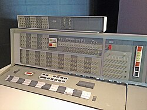

IBM 1401
Muito utilizado por empresas para processamento de dados comerciais.

A substituição das válvulas pelos transistores.
A segunda geração dos computadores foi marcada pelo uso dos transistores, que substituíram as válvulas eletrônicas. Esses componentes eram menores, mais rápidos, mais confiáveis e consumiam menos energia.
Os computadores passaram a gerar menos calor, ocupar menos espaço e ter maior eficiência. Nessa geração surgiram as linguagens de programação de alto nível, como COBOL e FORTRAN, facilitando o desenvolvimento de softwares.

Muito utilizado por empresas para processamento de dados comerciais.
Usado em aplicações científicas e cálculos complexos, incluindo pesquisas espaciais.
Um dos primeiros computadores totalmente transistorizados.

A segunda geração tornou os computadores mais acessíveis e confiáveis, ampliando seu uso para empresas e universidades. Esse avanço foi fundamental para o desenvolvimento da programação moderna.
Os computadores da segunda geração utilizaram transistores, tornando-se menores, mais rápidos e eficientes. Surgiram linguagens de alto nível e o uso comercial da computação se expandiu significativamente.